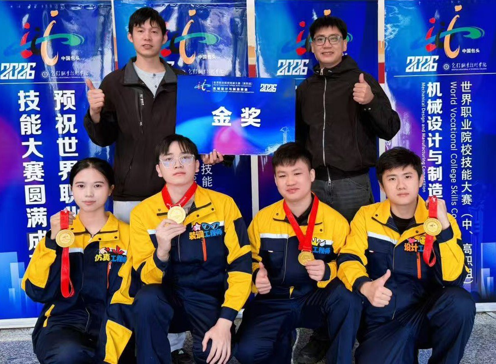
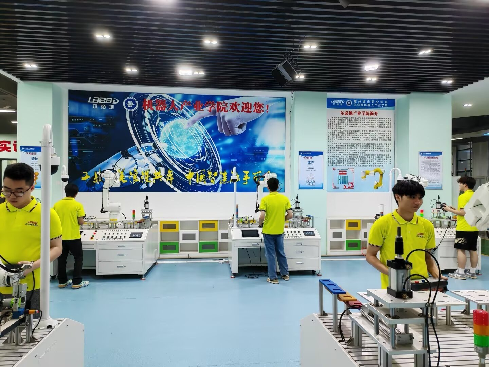
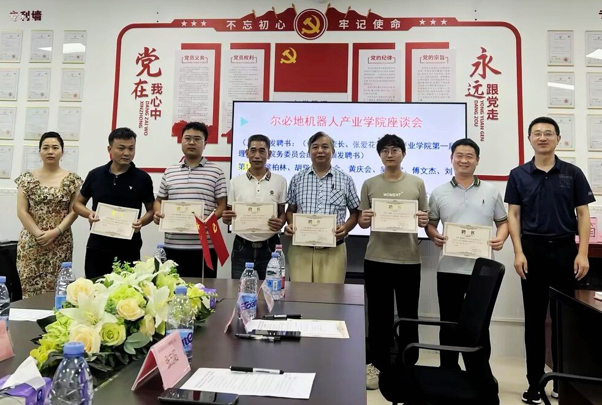
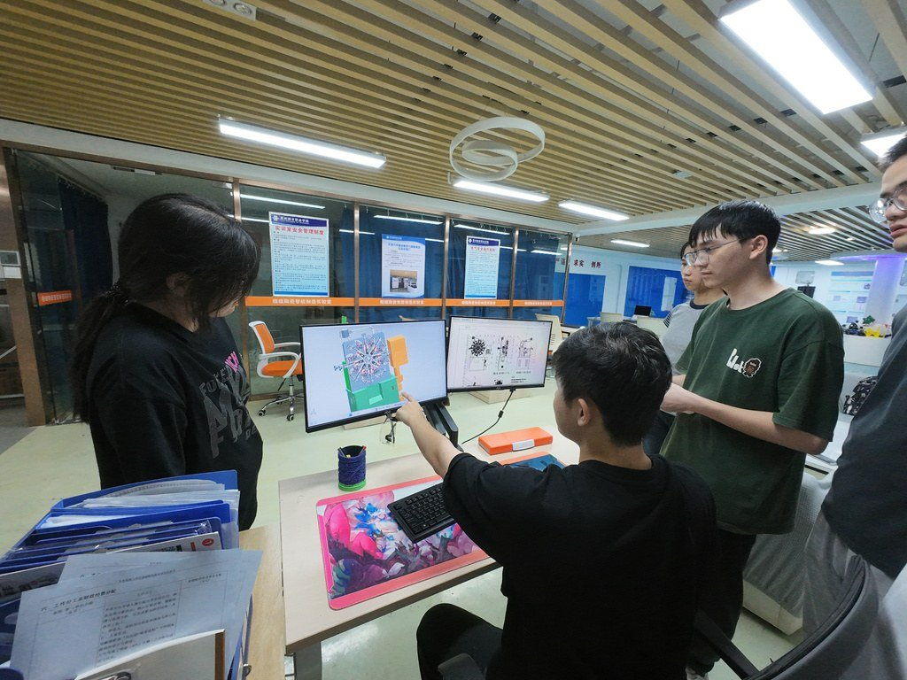
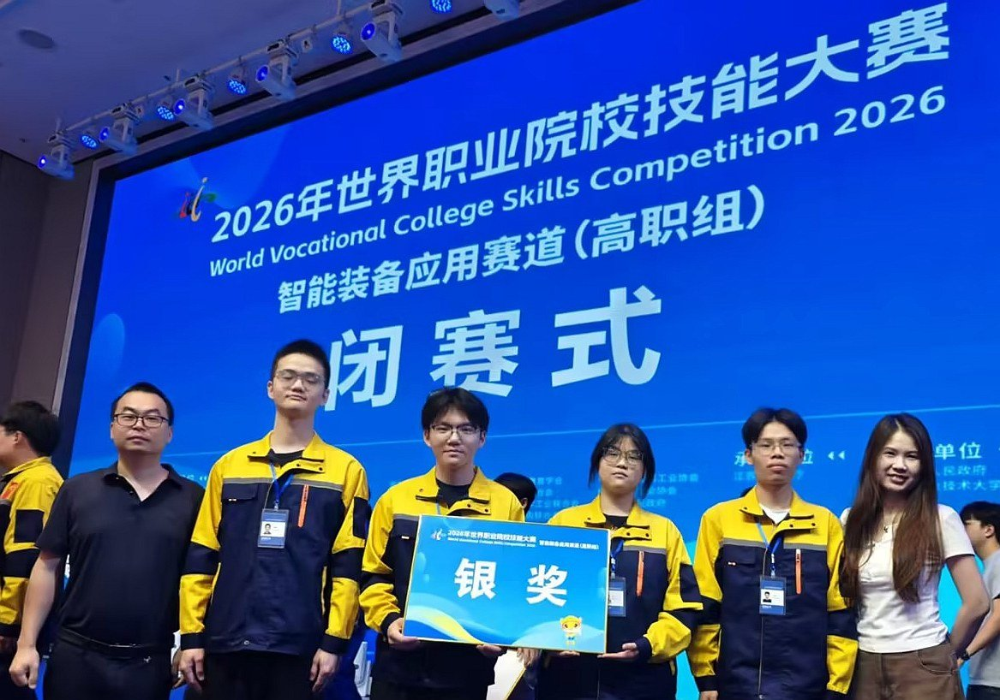
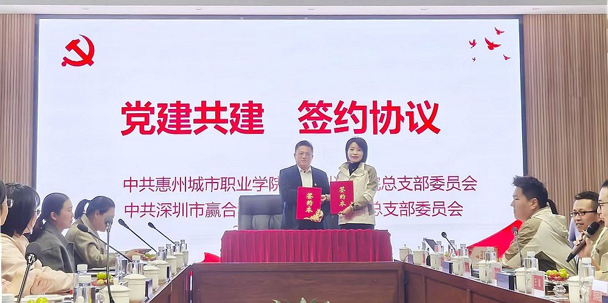

2026 年 9 月，第三届世界职业院校技能大赛总决赛传来捷报：惠州城市职业学院智能制造学院斩获机械设计与制造赛道金奖 1 项、智能装备应用赛道银奖 1 项，实现学校在该项国际赛事中获奖级别和数量的历史性双突破。奖牌背后，是学院长期坚持"党建引领、双融双创"，把组织资源嵌入专业群、实训室与参赛队的持续积累。

一、赛场突破：金奖与银奖同时落袋
在 2026 年世界职业院校技能大赛总决赛中，惠州城市职业学院智能制造学院获得机械设计与制造赛道金奖 1 项、智能装备应用赛道银奖 1 项。这是学校在该赛事中获奖级别与数量的双重突破，也刷新了历史纪录。
成绩并非孤例。近 5 年，智能制造学院在广东省职业院校技能大赛中获得一等奖 21 项、二等奖 17 项、三等奖 16 项，合计 54 项；近三年来，全校师生获得市级以上荣誉和奖励 200 余项。持续的赛事积累，为这次世赛突破提供了基础。
二、组织优势如何转化为育人效能
智能制造学院的做法是"1234N"校政行企党建联动工程——把学校、政府、行业、企业的资源用党建串联起来，让党组织延伸到专业群、车间和参赛队。学院先后联动赢合科技、德赛、德钢等近十家企业，以及河源职业技术学院机电工程学院等院校，并联合十余家校内外主体搭建常态化共建平台。

组织建设的成效逐年显现：2022 年学院牵头立项省高校党建研究会专项课题 1 项；2023 年党总支入选学校"党建工作标杆院系"培育单位；2024 年获评校级"先进基层党组织"，教工党支部获批校级"党建工作样板党支部"；2025 年教工党支部获评第五批全省党建工作样板支部培育创建单位，成为学院当前层级最高的省级党建建设平台。

三、把临时党小组建在备赛一线
2026 年世赛备赛期间，学院组建"赛训攻坚临时党小组"指导参赛队，把组织优势直接注入赛训环节。面对世赛的技术标准与壁垒，党员教师将产教融合成果与"岗课赛证"标准融通，把课堂搬到产线上；备赛阶段则扎根实训车间，与学生一起排查代码、推敲参数、疏导情绪。

训练内容从传统机电延伸到数字孪生，从 CNAS 国家认证实验室的科研攻关延伸到世赛赛场的巅峰对决。这支被称作"金牌教练"的队伍，承担的不只是技术训练，也包括把技能报国的价值追求带进课堂。
四、赛场标准回流产业：平台、实验室与订单班
竞赛标准回到课堂后，进一步转化为服务产业的能力。学院依托党建联建，与链主企业共建省级示范性产业学院——亿纬新能源产业学院；建成惠州高校首间 CNAS 认证实验室（新能源与电子检测实验室），总投资 300 万元，2025 年获国家认可；同时建成惠州市精密检测实训中心、机器视觉检测实验室等 6 个省市校级平台。
教工党支部与赢合科技、亿纬锂能、德赛集团等企业建立长效合作机制，校企共同制定人才培养方案，组建订单班超过 30 个，把企业真实生产项目转化为教学案例，为惠州电子信息与新能源产业集群持续输送技术技能人才。


五、红匠先锋：一支把课堂建在产线上的教师队伍
张方阳（惠州城市职业学院党委副书记、院长）：工学博士、教授，全国职业教育先进个人，广东特支计划教学名师，广东省职教名家，惠州市工程师学会会长。主持省级大学科技园、省工程应用技术协同创新中心等平台建设，获授权专利 22 项，发表论文 27 篇，主持国家、省市科研课题 20 项。
侯柏林（智能制造学院党总支书记、院长、教授）：全国职业院校技能大赛优秀指导教师，多项赛事专家与裁判。主持省级课题 5 项、横向课题 20 项，授权发明及实用新型专利近 40 项，主编教材 6 本，领衔超高精密技术及智能制造大师工作室。
吴仁君（智能制造学院副院长、机械工程副教授）：深耕机电职教 17 年，主持新能源装备技术专业申报与实训室规划，指导学生获得 2026 年世赛银奖、金砖国家技能大赛一等奖 4 项、省赛一等奖 6 项，获发明专利 5 项。
刘锦杭（智能制造学院党员教师、副院长）：备赛期间放弃节假日扎根实训车间，参与机电一体化 IEET 国际认证，牵头组建 30 余个订单班，指导学生夺得世赛机械设计与制造赛道金奖。
郑进辉（智能制造学院教研室主任、全国技术能手）：从金砖国家技能大赛金牌选手成长为世赛金牌教练，将企业一线实战标准融入训练，并作为党员科普讲师团成员把 3D 打印技术带进乡村课堂。
黄薪（智能制造学院党员教师）：主攻 PLC 智能控制、产线故障排查等赛项模块，获全国智能制造应用技术技能大赛二等奖，指导学生获得世赛智能装备应用赛道银奖。
任洪丽（智能制造学院教工党支部书记、副教授）：从教 23 年，推动党建工作与教学业务融合，长期担任班主任与学业导师，带领学生在省赛中获得多项奖项，出版专著 1 部。
王静（智能制造学院机电教研室主任、机械工程副教授）：工学博士、22 年党龄，参与机电一体化 IEET 认证与"岗课赛证"融通，指导学生获得省赛机电一体化赛项一等奖、中国大学生机械工程创新创意大赛全国一等奖。
胡肖荣健（智能制造学院教研室主任、工业机器人工程师）：从企业调试工程师转型职教教师，参与工业机器人焊接实训室建设，获智能制造运维员国赛二等奖，指导学生获智能焊接技术赛项省赛二等奖。
吕哲（智能制造学院专任教师、哈尔滨工业大学硕士）：原华为技术有限公司工程师，主讲课程累计授课逾 1100 学时，学生评教均为优秀，获惠州市课程思政优秀教学案例二等奖，指导学生获省赛二等奖、全国三维数字化创新设计大赛省赛特等奖。
趋势观察：从"参赛夺冠"到"标准输出"
其一，竞赛标准与产业标准的边界正在模糊。当"岗课赛证"被写进日常教学，赛场成绩就不再只是参赛结果，而是课程体系与实训条件的一次集中检验。金奖与银奖的背后，是训练内容、设备平台和企业项目长期耦合的结果。
其二，党建与业务的融合方式趋于具体化。把临时党小组建在备赛一线、把支部建在专业群上，本质上是一种组织资源的调度机制：在关键任务中把骨干力量集中起来，减少协同成本。这种方式能否沉淀为常态机制，比单次夺金更值得观察。
其三，产教融合正在从"合作挂牌"走向"共同定义培养标准"。30 余个订单班、共同制定人才培养方案、把真实生产项目转化为教学案例，说明企业参与已延伸到课程与评价环节。对区域产业集群而言，这种在地化的人才供给能力，比单次赛事荣誉更具长期价值。
结语
世赛奖牌是一个结果，真正支撑它的是专业群建设、实训平台、师资队伍与企业协同的长期积累。把赛场标准带回课堂、把课堂连到产线，这条路径能否持续产出人才，才是这枚金奖更值得追踪的意义。